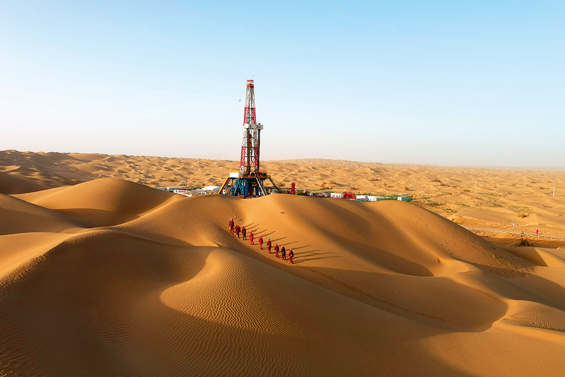

У 2023 році нещодавно додані підтверджені запаси нафти становили 155 мільйонів тонн, ймовірні – 525 мільйонів тонн, а можливі – 562 мільйони тонн. Додані підтверджені запаси природного газу склали 281,7 млрд кубометрів, ймовірні – 427,3 млрд кубометрів, можливі – 1120,1 млрд кубометрів. Річний видобуток сирої нафти склав 35,441 млн. тонн, збільшившись на 118 тис. тонн. Видобуток природного газу склав 37,81 млрд кубометрів із збільшенням на 2,54 млрд кубометрів. Еквівалентний видобуток нафти і газу склав 65,57 млн тонн, встановивши історичний максимум. Нові потужності з видобутку сирої нафти склали 3,326 млн тонн, що на 454 тис. тонн більше. Нові потужності з видобутку природного газу склали 8,64 млрд кубометрів (включаючи метан вугільних родовищ), що на 1,24 млрд кубометрів більше.
Ми інтенсифікували розвідку ризиків на глибинних і сланцевих нафтових і газових блоках, посилили розвідку з інтегрованою оцінкою в багатих нафтою і газом зонах, активно підтримували та розширювали права на видобуток і досягли 4 великих проривів, 9 важливих проривів і 18 комерційних відкриттів, перевищивши щорічні цільові запаси. Розвідка нафти. Було досягнуто великого прориву в розвідці надглибоких родовищ нафти і газу в новій зоні в центральній частині Шуньбей, басейн Тарім, з нещодавно збільшеними можливими запасами нафти і газу на 25,08 млн тонн і 144,2 млрд кубометрів відповідно. Було зроблено значний прорив у новій галузі розвідки нафти в складному передгірному поясі на північно-західній околиці Джунгарського басейну зі збільшенням можливих запасів на 30,63 мільйона тонн. Значні прориви були зроблені в розвідці нафти і газу в нових юрських пластах на півночі Сичуані, з новими можливими запасами нафти в 8,26 мільйона тонн і запасами газу в 72,1 мільярда кубічних метрів. Ми продовжували сприяти будівництву Національної демонстраційної зони сланцевої нафти в Шенлі Цзянь, відкривши три родовища сланцевої нафти потужністю 100 мільйонів тонн, включаючи Сіньсін, Сіньфен і Сіньхе. Значні прориви були зроблені в розвідці сланцевої нафти в секції Fu'er басейну Subei, і результати розвідки сланцевої нафти в Fuxing продовжували розширюватися. Розвідка природного газу. Комплексне дослідження та розробка газу в щільних пластах у пласті Xujiahe родовища Hexing у західній Сичуані досягло значних результатів із додатковими підтвердженими запасами 133 мільярдів кубічних метрів. Газове родовище Даніуді в басейні Ордос досягло значного прориву в розвідці метану вугільних пластів глибиною 2800 метрів із додатковими можливими запасами 122,6 мільярда кубічних метрів. Було досягнуто значних проривів у розвідці сланцевого газу пермської формації Далонг у Пугуані, Сичуаньський басейн, і пермської формації Уцзяпін у районі Хунсін у західному Хубеї та східному Чунціні. Глибокий вугільний метан у Наньчуані був успішно обраний як один із перших національних демонстраційних проектів з розвідки та розробки вугільного метану.
Ми повністю виконали річний план виробництва та експлуатації, уважно дотримувалися обмеження виробничих потужностей для організації операцій, посилили координацію виробництва та продажів у ключових регіонах і виконали річне завдання з видобутку сирої нафти. Річний видобуток сирої нафти становив 35,441 млн. тонн із збільшенням на 118 000 тонн, перевищуючи «7-річний план дій» протягом п’яти років поспіль. Ми розробили та впровадили трирічний план вивільнення нерозроблених запасів, зміцнили інтеграцію геології та інженерії та сприяли застосуванню технологій покращення видобутку, таких як комплексно структуровані свердловини, закачування води під тиском, об’ємний розрив пласта та хімічне заводнення для зниження в’язкості. Ми ефективно сприяли будівництву виробничих потужностей у Цзянь, Тахе, Чжуньсі та на морських територіях, активно сприяли тривимірному дослідженню розробки сланцевої нафти, а ефект групи свердловин Boxing Fanyeping 1 перевищив проектний план. Велика група свердловин Niuzhuang, велика платформа та група малих свердловин Minfeng, а також кілька груп свердловин у Qintong показали перші результати: нова виробнича потужність склала 3,326 мільйона тонн, збільшившись на 454 000 тонн, встановивши новий максимум з 2015 року. Ми вдосконалили точний опис і моделювання нафтових покладів, консолідували точне управління класифікацією нафтових покладів і стабілізували швидкість природного спаду та повний вміст води на рівні 10,4% і 90,9% відповідно. Затоплене водосховище покращило мережу, поділило закачування води та відрегулювало поле потоку, зі швидкістю природного спаду 10,2%, зменшення на 0,1 відсоткового пункту. Впровадження технології термічного відновлення та підвищення ефективності у пластах важкої нафти призвело до стабільного співвідношення нафти та пари 0,57. Ми посилили нагнітання азоту та комплексне управління установкою в тріщинистому та порожнистому нафтовому пласті Тахе, досягнувши темпу природного падіння на 15,3%, що на 0,3 відсоткових пункти. Хімічне заводнення розширило сфери застосування та масштаби: річний видобуток нафти склав 3,19 мільйона тонн, збільшившись на 1,51 мільйона тонн, досягнувши нових максимумів майже за 7 років. Ми активно сприяли демонстраційним проектам індустріалізації CCUS у Шенлі та на півночі Цзянсу, закачуючи 1,16 мільйона тонн вуглекислого газу, що на 520 000 тонн, виробляючи 110 000 тонн нафти, що на 39 000 тонн більше.